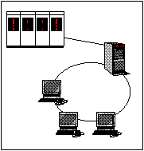

Hydro Finans / Felos IV

- Applikasjon for likviditetsstyring i Hydro Finans
- Håndterer milliarder av kroner hver uke mellom Hydro-enheter og inn/ut
av konsernet
- Erstatning for gammelt Unisys system fra 1970-tallet
- Teknologi:
- Klient/tjener : Windows/Unix
- SQL Windows, OLTP, Oracle
- Unisys U6000 Intel multiprosessor